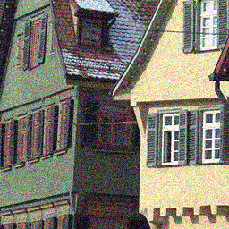

線画ゼロショット除去 研究
論文再現ZS-N2N 再現実験
Zero-Shot Noise2Noise（CVPR 2023）を自分で実装し、論文の Table 1 と同じ数値が出るか確かめた。
12/12条件で合格
−0.30〜+0.09論文値との差（dB）
252ラン
2026年11月15日


Kodak24 kodim08、ガウス σ=25。80×80 px を拡大。PSNR は 256×256 全体の値。
手法
1枚を2枚に間引き、互いを予測させる
2×2 ダウンサンプリング
対角の2画素を平均して、半分の大きさの画像を2枚作る。
写っている絵は同じで、ノイズはほぼ別物になる。



1
互いを予測させる
D1 から D2 を、D2 から D1 を予測する。ノイズは予測できないので、絵だけを学ぶ。
2
小さなネット
畳み込み 3 層、中間 48 チャネル。パラメータは 22,275 個。1 枚につき 2,000 反復学習する。
3
残差学習
ネットはノイズを推定し、入力から引く。「間引いてから除去」と「除去してから間引き」が一致するよう、一貫性の項も足す。
損失 = 残差の誤差 + 一貫性の誤差
出力 = y − f(y)
除去前後 1/2 Kodak24 kodim08
窓枠の線を残して、ノイズが消える
黄色の枠内（80×80 px）を拡大
除去前後 2/2 McMaster18 12.tif
網目の細い線も残る
黄色の枠内（80×80 px）を拡大
論文再現 ZS-N2N
1 / 10